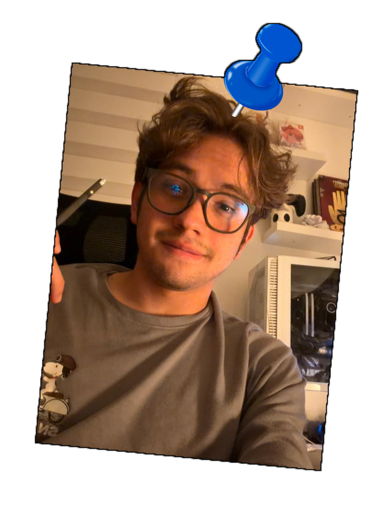
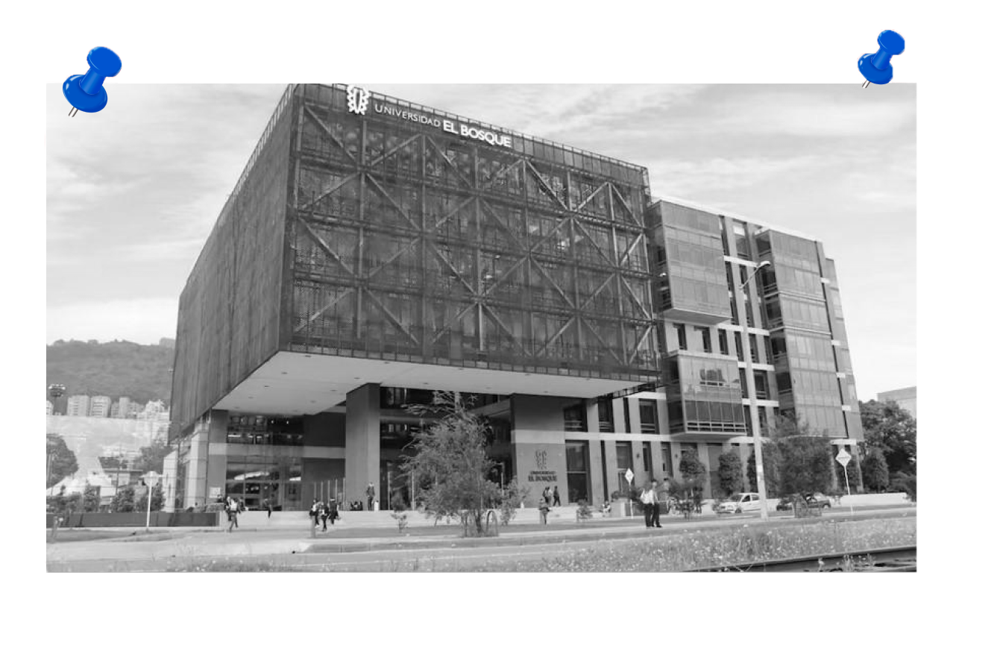

Archivo Sonoro Clasificado
Objetivo

Lugar estudio

INICIO:
En este archivo sonoro recogeré momentos privados de Christian junto a sus amigos, juntando sonidos y videos grabados en la universidad y en la ciudad.
La idea es que quien escuche o vea esto pueda sentir cómo suena su vida en un día normal y vivir algo que normalmente solo puede ver su círculo cerrado.
Algunos los grabé mientras caminaba, otros mientras entraba a lugares comunes como un baño.
Además de un archivo sonoro, es una memoria nostálgica de lo que escucha y ve a diario.


He estado siguiéndolo, he encontrado los lugares donde suele pasar el rato y las personas con las que se rodea, más adelante en el documento adjunto videos y audios grabados por mí.
Una de las personas mas cercanas a el es su pareja, eh logrado conseguir muy pocas fotos pero se que su nombre es Manuela.
DATOS
- - Nombre: Christian
- - Edad: 22
- - Residencia: cll 124 #31 A 41